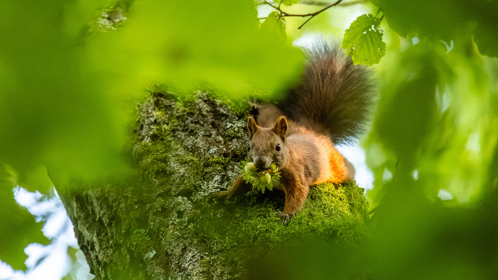
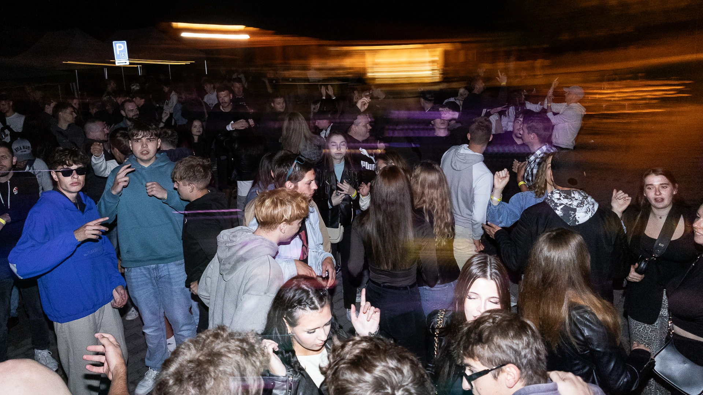
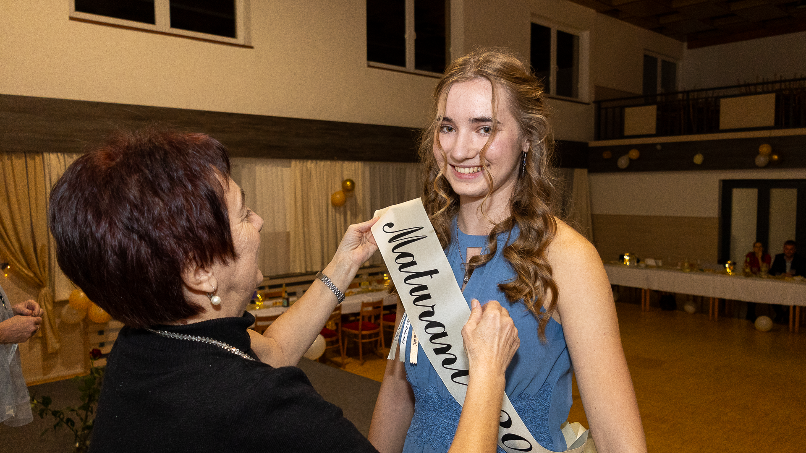
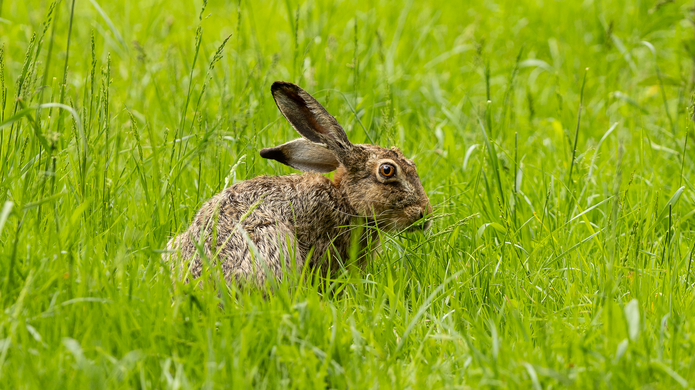
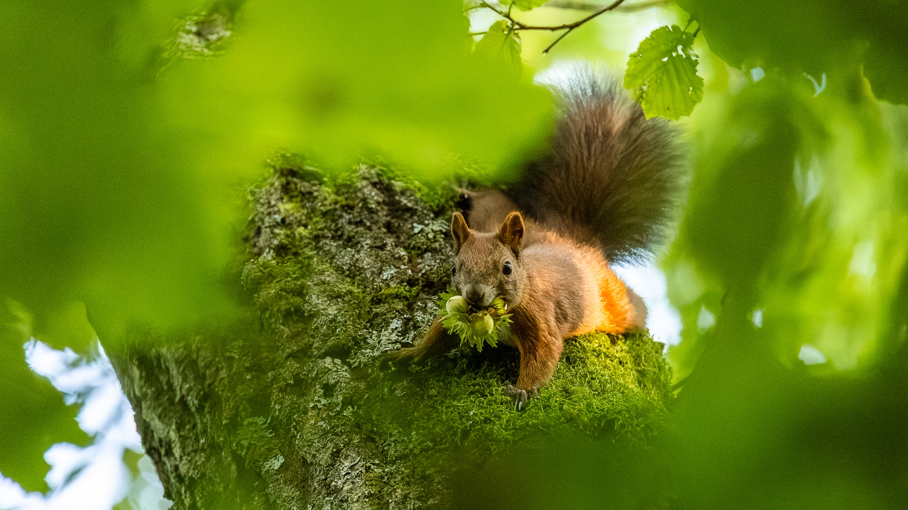
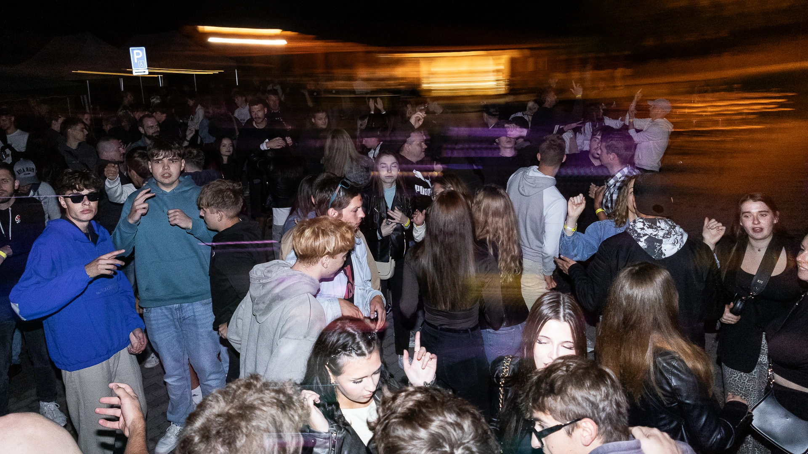
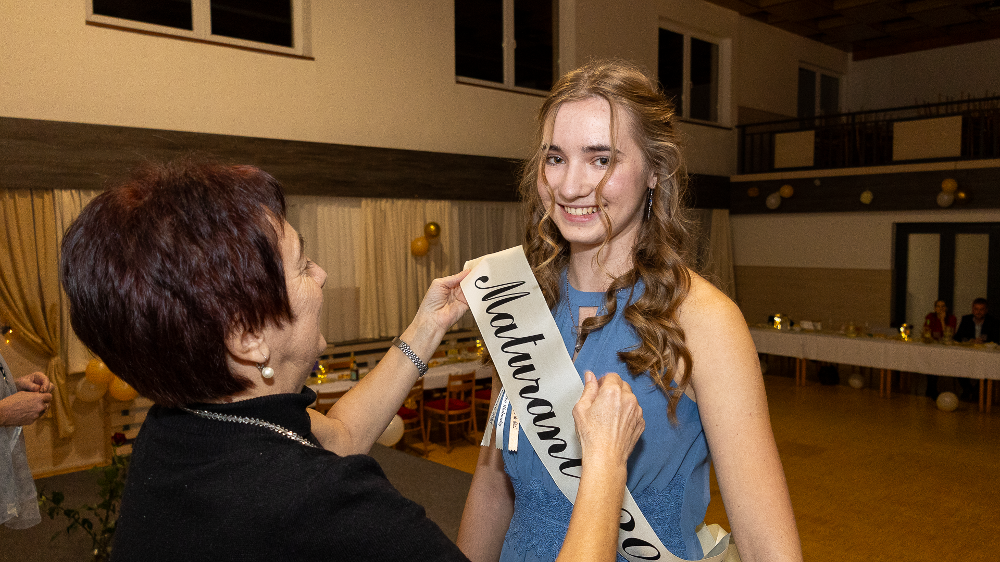
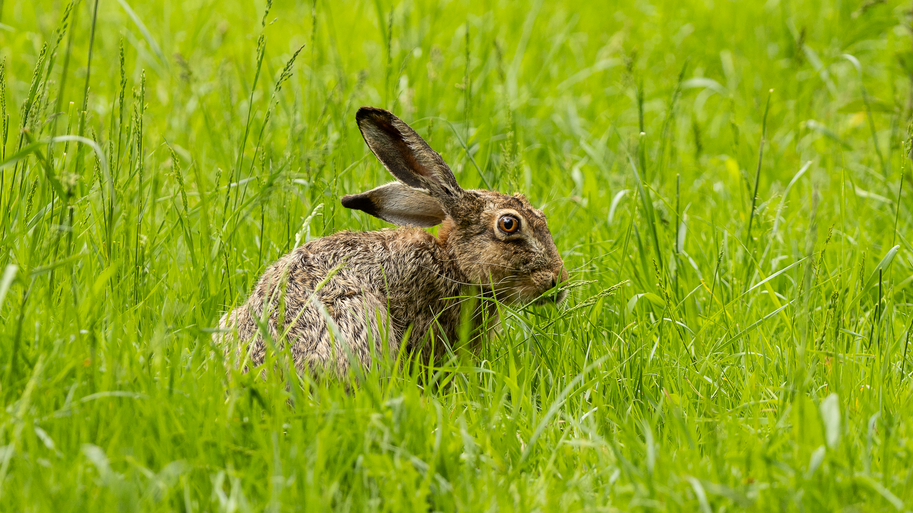
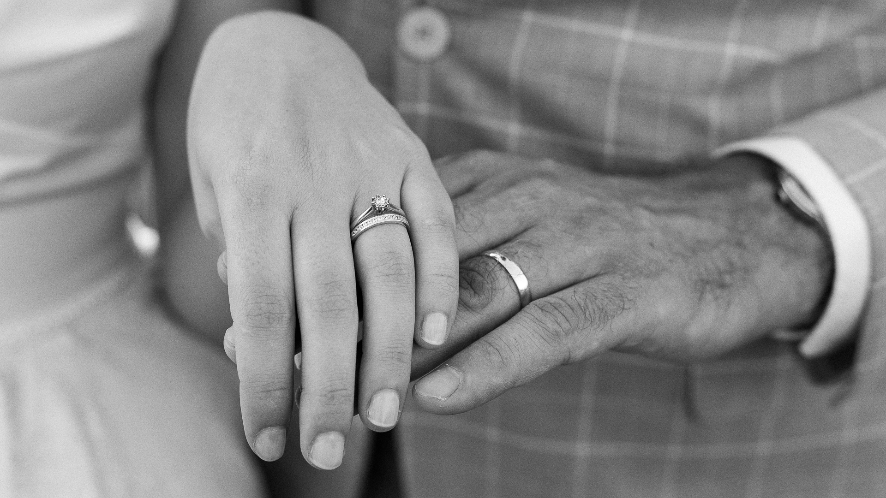
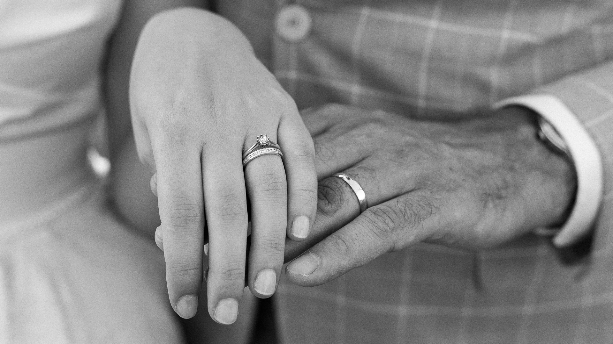

 

Patrik Bednář
Fotograf | Portrét, Akce, Wildlife

Pár vět o mně
Jmenuji se Patrik Bednář a jak asi tušíte, miluju focení.
Jsem vášnivý fotograf specializující se na zachycení jedinečných okamžiků a emocí. Mým cílem je vyprávět příběhy skrze objektiv a vytvářet snímky, které přetrvají.
Prohlédněte si moji práci.
Stužkovací večírky
Co dostanete, když si mě objednáte?
Stužkovací večírek je jedinečná událost, která si zaslouží být zdokumentována. Mým cílem je zachytit nejen momenty, ale i neopakovatelnou atmosféru a emoce celého večera. Prohlédněte si reference.
- Fotoreportáž z celého průběhu akce
- Skupinové fotografie třídy i menších skupinek
- Portréty jednotlivců dle přání
- Upravené fotografie v digitální podobě
- Online galerie pro snadné sdílení a stažení, dostupná minimálně 3 měsíce, ve webové kvalitě
- Odkaz na stažení fotografií v plné kvalitě